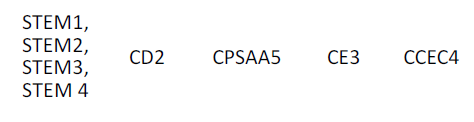
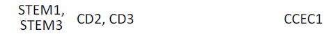
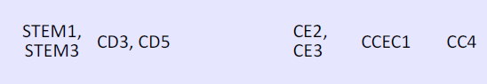
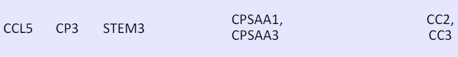

Texto
Relación de descriptores operativos de perfil de salida:
CE1.

CE5.

CE6

CE10.

Competencias específicas trabajadas:
1. Interpretar, modelizar y resolver problemas de la vida cotidiana propios de las matemáticas aplicando diferentes estrategias y formas de razonamiento para explorar distintas maneras de proceder y obtener posibles soluciones.
5. Reconocer y utilizar conexiones entre los diferentes elementos matemáticos interconectando conceptos y procedimientos para desarrollar una visión de las matemáticas como un todo integrado.
6. Identificar las matemáticas implicadas en otras materias y en situaciones reales, susceptibles de ser abordadas en términos matemáticos, interrelacionando conceptos y procedimientos para aplicarlos en situaciones diversas.
10. Desarrollar destrezas sociales reconociendo y respetando las emociones y experiencias de los demás, participando activa y reflexivamente en proyectos en equipos heterogéneos con roles asignados para construir una identidad positiva como estudiante de matemáticas, fomentar el bienestar personal y grupal y crear relaciones saludables.
Saberes Básicos integrados en la situación de aprendizaje:
|
Efecto de las operaciones aritméticas con números enteros, fracciones y expresiones decimales. |
| Longitudes y áreas en figuras planas: deducción, interpretación y aplicación. |
| Métodos para la toma de decisiones de consumo responsable: relaciones calidad-precio y valor-precio en contextos cotidianos |
|
Situaciones de proporcionalidad en diferentes contextos (aumentos y disminuciones porcentuales, rebajas y subidas de precios, impuestos, escalas, cambio de divisas, velocidad y tiempo, etc.). |
| Comprensión del concepto de variable en sus diferentes expresiones |
|
Relaciones lineales en situaciones de la vida cotidiana o matemáticamente relevantes: expresión mediante álgebra simbólica. |
Criterios de evaluación relacionados:
1.1. Interpretar problemas matemáticos organizando los datos dados, estableciendo las relaciones entre ellos y comprendiendo las preguntas formuladas
1.2. Aplicar herramientas y estrategias apropiadas que contribuyan a la resolución de problemas.
5.1. Reconocer las relaciones entre los conocimientos y experiencias matemáticas formando un todo coherente.
5.2. Realizar conexiones entre diferentes procesos matemáticos aplicando conocimientos y experiencias previas.
6.2. Identificar conexiones coherentes entre las matemáticas y otras materias resolviendo problemas contextualizados.
10.1. Colaborar activamente y construir relaciones trabajando con las matemáticas en equipos heterogéneos, respetando diferentes opiniones, comunicándose de manera efectiva, pensando de forma crítica y creativa y tomando decisiones y realizando juicios informados.
10.2. Participar en el reparto de tareas que deban desarrollarse en equipo, aportando valor, favoreciendo la inclusión, la escucha activa, asumiendo el rol asignado y responsabilizándose de la propia contribución al equipo.